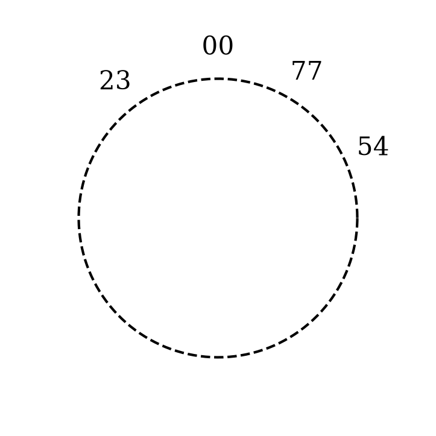

8. Үет дараалал
Хэрэв аливаа n \geqslant n_0 хувьд a_n = a_{n+T} биелэх эерэг бүхэл T ба n_0 тоонууд оршдог бол \{a_n\} дарааллыг үет дараалал гэнэ. Цаашилбал, хэрэв n_0 = 1 бол \{a_n\}-ийг цэвэр үет дараалал, харин T-г \{a_n\}-ийн үе гэж нэрлэнэ.
Үет дарааллын тодорхойлолт ёсоор хэрэв T нь \{a_n\}-ийн үе бол аливаа m \in \mathbf{N}^* хувьд mT нь мөн \{a_n\}-ийн үе болно. Дээрх чанарыг тооны онолын алдарт Безугийн теоремтой хослуулбал дараах теорем гарна:
Энэ теоремоос үет \{a_n\} дараалалд хамгийн бага эерэг үе оршино гэдгийг дүгнэж болох бөгөөд энэ нь үет f функц хамгийн бага эерэг үегүй байж болдогтой эрс ялгаатай юм.
Бүхэл тоон \{a_n\} дараалал нь өөрөө үет дараалал биш боловч ямар нэг эерэг бүхэл m тооны хувьд модуль m-ээр үет дараалал байж болно. Энэ нь модульчлагдсан үет дарааллын ойлголт юм. Өөрөөр хэлбэл, аливаа n \geqslant n_0 хувьд a_{n+T} \equiv a_n \pmod{m} биелэх T, n_0 \in \mathbf{N}^* оршино.
Үнэхээр, хэрэв \{a_n\} нь тогтмол коэффициенттэй k-р эрэмбийн рекуррент дараалал бол дараах цуглуулгуудыг авч үзье: (a_1, a_2, \dots, a_k), \quad (a_2, a_3, \dots, a_{k+1}), \quad \dots \tag{1} (a_1, a_2, \dots, a_k) цуглуулга дахь x_i бүр модуль m-ээр зөвхөн 0, 1, 2, \dots, m - 1 гэсэн утгуудыг авах тул (1)-д хамгийн олондоо m^k ялгаатай цуглуулга байна. Тиймээс (a_r, a_{r+1}, \dots, a_{r+k}) \equiv (a_t, a_{t+1}, \dots, a_{t+k}) \pmod{m} нөхцөлийг хангах r, t \in \mathbf{N}^* (r < t) оршино.
T = t - r гэе. \{a_n\} нь тогтмол коэффициенттэй рекуррент дараалал гэдгийг тооцвол аливаа n \geqslant r хувьд a_{n+T} \equiv a_n \pmod{m} болно.
Тиймээс Теорем 2 биелнэ.
Бодолт. Тооцоог хялбар болгохын тулд x_n = 4y_n гэе. Тэгвэл: y_{n+2} = \frac{\max\{y_{n+1}, 1\}}{y_n}, \quad n = 0, 1, 2, \dots Шууд тооцоолол хийснээр бид дараах хүснэгтийг гарган авч чадна:
| y_0 \leqslant 1, \; y_1 \leqslant 1 | y_0 \leqslant 1, \; y_1 > 1 | y_0 > 1, \; y_1 \leqslant 1 | y_0 > 1, \; y_1 > 1 | |
|---|---|---|---|---|
| y_2 = | \dfrac{1}{y_0} | \dfrac{y_1}{y_0} | \dfrac{1}{y_0} | \dfrac{y_1}{y_0} |
| y_3 = | \dfrac{1}{y_0 y_1} | \dfrac{1}{y_0} | \dfrac{1}{y_1} | \max\left\{\dfrac{1}{y_0}, \dfrac{1}{y_1}\right\} |
| y_4 = | \dfrac{1}{y_1} | \dfrac{1}{y_1} | \dfrac{y_0}{y_1} | \dfrac{y_0}{y_1} |
| y_5 = | y_0 | y_0 | y_0 | y_0 |
| y_6 = | y_1 | y_1 | y_1 | y_1 |
Тиймээс \{y_n\} нь 5 үетэй цэвэр үет дараалал болох ба \{x_n\} мөн адил байна. Үр дүнд нь x_{2011} = x_1.
Тайлбар. Дээрх бодлогод өгөгдсөн рекуррент хамаарал нь Линессийн (Lyness) тэгшитгэлийн тусгай хэлбэр юм. Энд шууд тооцоолох замаар үеийг тодорхойлох нь бутархай (үет) рекуррент дараалалтай ажиллах шулуун бөгөөд үр дүнтэй арга юм.
Бодолт. x_0-ийг бэхэлбэл \{x_n\} дараалал цор ганц утгаар тодорхойлогдохыг ажиглая. Иймд бид бодлогыг x_0 хэдэн ялгаатай утга авч чадахыг олох бодлого болгон хувиргалаа.
Энэ бодлогыг бодохын тулд хоёртын тооллын системийг ашиглая. \{x_n\}-ийг хоёртын тоогоор илэрхийлье. x_n = (0.b_1 b_2 \dots)_2 байг. Хэрэв b_1 = 1 бол \frac{1}{2} \leqslant x_n < 1 тул x_{n+1} = 2x_n - 1 = (0.b_2 b_3 \dots)_2; хэрэв b_1 = 0 бол 0 \leqslant x_n < \frac{1}{2} тул x_{n+1} = 2x_n = (0.b_2 b_3 \dots)_2 болно. Энэ нь x_n = (0.b_1 b_2 \dots)_2 үед ямагт x_{n+1} = (0.b_2 b_3 \dots)_2 биелэхийг харуулна (өөрөөр хэлбэл, бутархайн цэгийн ард байгаа эхний цифрийг «залгихтай» адил үйлдэл юм).
Одоо x_0 = (0.a_1 a_2 \dots)_2 гэе.
Дээрх гаргалгаанаас x_5 = (0.a_6 a_7 \dots)_2 гэдгийг дүгнэж болно. x_5 = x_0 гэдгийг тооцвол x_0 нь хоёртын тооллын систем дэх үет бутархай болно: x_0 = (0.\dot{a}_1 a_2 \dots \dot{a}_5)_2 = \frac{(a_1 \dots a_5)_2}{2^5 - 1}, энд (a_1 \dots a_5)_2 нь хоёртын тооллын систем дэх сөрөг биш бүхэл тоог илэрхийлнэ (a_1, \dots, a_5 нь бүгд 1 биш гэдгийг анхаарна уу).
Дүгнэж хэлбэл, x_0-ийн хувьд 2^5 - 1 = 31 ялгаатай утга оршино (учир нь a_1, \dots, a_5 нь 0 эсвэл 1 утга авах боловч бүгд 1 байж болохгүй). Өөрөөр хэлбэл, 31 ялгаатай дараалал оршино.
Тайлбар. Бид энд хоёртын бичлэгийг ашиглан рекуррент хамаарлыг илүү зүй тогтолтой томьёо руу шилжүүллээ. Улмаар үүнийг дарааллын үет чанартай хослуулснаар уг дарааллын бүтцийг бүрэн атгаж чадлаа. Үндсэндээ бид ялгаатай огторгуйнуудын хооронд буулгалт хийж байна.
Баталгаа. Бид энэ асуултыг хэрэв a_m = 0 байх m \in \mathbf{N}^* оршдог бол a_1 = 0 эсвэл a_2 = 0 байна гэдгийг батлах бодлого болгон хувиргаж чадна.
Безугийн (үржигдэхүүний) теорем ёсоор f(x) нь бүхэл коэффициенттэй олон гишүүнт тул дурын m, n \in \mathbf{Z} (m \neq n) хувьд m - n \mid f(m) - f(n) биелнэ.
Одоо b_n = a_{n+1} - a_n (n = 0, 1, 2, \dots) гэе. Тэгвэл дээрх үр дүн болон \{a_n\}-ийн тодорхойлолт ёсоор b_n \mid b_{n+1} байна (хэрэв b_n = 0 бол b_{n+1} = f(a_{n+1}) - f(a_n) = 0 гэдгийг ажиглая).
a_m = a_0 = 0 тул a_{m+1} = f(a_0) = a_1 болно. Үр дүнд нь b_m = b_0.
Хэрэв b_0 = 0 бол a_0 = a_1 = \dots = a_m болж өгүүлбэр үнэн.
Эсрэг тохиолдолд |b_0| = |b_m| \neq 0 болох ба b_0 \mid b_1, b_1 \mid b_2, \dots, b_{m-1} \mid b_m гэдгийг тооцвол |b_0| = |b_1| = \dots = |b_m| гарна.
b_0 + b_1 + \dots + b_{m-1} = a_m - a_0 = 0 тул b_0, b_1, \dots, b_{m-1} тоонуудын хагас нь эерэг бүхэл, хагас нь сөрөг бүхэл тоонууд байна. Тиймээс b_{k-1} = -b_k байх k \in \{1, 2, \dots, m - 2\} орших ба улмаар a_{k-1} = a_{k+1} болно. \{a_n\}-ийн тодорхойлолт ёсоор бүх n \geqslant k - 1 хувьд a_{n+2} = a_n биелнэ. n = m гэж авбал: a_0 = a_m = a_{m+2} = f(a_{m+1}) = f(f(a_m)) = f(f(a_0)) = a_2. Тэгвэл a_2 = 0.
Иймд өгүүлбэр үнэн.
Баталгаа. \{x_k \pmod{m}\} дарааллыг авч үзье; энд y_k гэж тэмдэглэсэн x_k \pmod{m} нь x_k-г m-д хуваахад гарах үлдэгдлийг илэрхийлнэ. Бид \{y_n\} дараалалд дараалсан m - 1 ширхэг тэг оршихыг батлах болно.
Теорем 2 болон (1)-ээс аливаа k \geqslant n_0 хувьд y_{k+T} = y_k биелэх n_0 ба T \in \mathbf{N}^* оршино. Тухайлбал: y_{n_0 + m - 1} = y_{n_0 + m - 1 + T}, \quad y_{n_0 + m - 2} = y_{n_0 + m - 2 + T}. Энэ хоёр тэгшитгэлийг хасаж, (1) болон y_k-ийн тодорхойлолтыг тооцвол y_{n_0 - 1} = y_{n_0 - 1 + T} гарах ба үүнтэй ижил аргаар бүх k \geqslant 1 хувьд y_k = y_{k+T} болно.
Үр дүнгээ гаргах болон тооцоог хялбар болгохын тулд \{x_n\}-ийн дугаарыг (1)-ээр тодорхойлогдох рекуррент хамаарлын дагуу сөрөг бүхэл тоонууд руу өргөтгөе. Дээрхтэй хослуулбал аливаа k \in \mathbf{Z} хувьд y_k = y_{k+T} болно.
Одоо x_n = x_{n+m} - x_{n+m-1} гэдгээс x_0 = x_{-1} = \dots = x_{-(m-2)} = 1 (энд бид дурын 1 \leqslant j \leqslant m хувьд x_j = j анхны нөхцөлийг ашиглалаа), цаашилбал x_{-(m-1)} = x_{-m} = \dots = x_{-(2m-3)} = 0 гэж дүгнэж болно. y_k = y_{k+T} гэдгийг тооцвол: (y_{-(2m-3)+T}, \dots, y_{-(m-1)+T}) = (y_{-(2m-3)}, \dots, y_{-(m-1)}) = (0, \dots, 0). Гэсэн хэдий ч y_{-(m-2)} = \dots = y_0 = 1 тул -(2m - 3) + T \geqslant 1 байна. Энэ нь \{y_n\} дарааллын эерэг дугаартай гишүүдийн дотор дараалсан m - 1 ширхэг тэг оршиж буйг харуулна.
Иймд өгүүлбэр үнэн.
Баталгаа. Эерэг бүхэл n \geqslant 10^{m+1} тооны хувьд 10^p \leqslant n < 10^{p+1} байх p \in \mathbf{N}^* (p \geqslant m + 1) оршино гэдгийг ажиглая. Тэгвэл n нь аравтын тооллын системд p + 1 оронтой тоо болно. Тиймээс: \begin{aligned}
S_m(n) &\leqslant (p + 1) \cdot 9^m < (p + 1) \cdot 9^{p-1} \\
&< 9^p + C_p^1 \cdot 9^{p-1} < (9 + 1)^p = 10^p \leqslant n.
\end{aligned} Энэ нь \{n_k\} дарааллын гишүүдийн хувьд хэрэв n_k \geqslant 10^{m+1} бол n_{k+1} = S_m(n_k) < n_k биелэхийг харуулна.
Нөгөө талаас хэрэв эерэг бүхэл n < 10^{m+1} бол: S_m(n) \leqslant (m + 1) \cdot 9^m < (9 + 1)^{m+1} = 10^{m+1}. Хэрэв n_k < 10^{m+1} бол n_{k+1} = S_m(n_k) < 10^{m+1} мөн биелэхийг харж болно.
Дээрх шинжилгээнээс k дугаар хангалттай их болоход заавал n_k < 10^{m+1} болно. Иймд тодорхой нэг гишүүнээс эхлэн \{n_k\}-ийн гишүүн бүр \{1, 2, \dots, 10^{m+1} - 1\} олонлогт харьяалагдана. Өөрөөр хэлбэл, аливаа k \geqslant k_0 хувьд 1 \leqslant n_k \leqslant 10^{m+1} - 1 биелэх k_0 \in \mathbf{N}^* оршино. Үүнийг Дирихлейн зарчимтай хослуулбал n_r = n_s байх r, s \in \mathbf{N}^* (r > s \geqslant k_0) оршино. \{n_k\}-ийн тодорхойлолт ёсоор k \geqslant s үед n_k = n_{k+T} болох ба энд T = r - s ба T \leqslant 10^{m+1} - 1 байна.
Иймд \{n_k\} нь аливаа n_0 \in \mathbf{N}^* хувьд ямагт үет дараалал байх ба хамгийн бага эерэг үе нь 10^{m+1} - 1-ээс хэтрэхгүй.
Тиймээс (1) ба (2) биелнэ.
Баталгаа. Бодлогыг a_n-ийг модуль 100-аар авч хэлэлцье. a_n-ийг 100-д хуваахад гарах үлдэгдлийг b_n гэе. Өөрөөр хэлбэл, b_n нь 00, 01, \dots, 99-ийн дундах хоёр оронтой тоо юм.
\{a_n\}-ийн тодорхойлолт ёсоор аливаа n \in \mathbf{N}^* хувьд b_{n+1} \equiv b_n + 77 эсвэл b_n + 2 \times 77 \pmod{100} биелнэ.

(77, 100) = 1 тул j нь модуль 100-аар үлдэгдлийн бүрэн системээр гүйхэд 77j нь мөн модуль 100-аар үлдэгдлийн бүрэн системээр гүйнэ. j = 0, 1, 2, \dots, 99 хувьд 77j-г 100-д хуваахад гарах үлдэгдлүүдийг баруун талын зурагт харуулсан шиг тойрог дээр байрлуулъя. Тэгвэл \{b_n\}-ийн бүтцээс b_n ба b_{n+1} нь тойрог дээр зэрэгцээ орших эсвэл дундаа нэг тоо алгасаж байрлана гэдгийг дүгнэж болно. Иймд тойрог дээрх зэрэгцээ орших дурын хоёр тооны ядаж нэг нь \{b_n\}-д оршино. 00 ба 77 зэрэгцээ байрласан тул b_n = 00 эсвэл 77 байх n \in \mathbf{N}^* заавал оршино; өөрөөр хэлбэл, a_n-ийн сүүлийн хоёр цифр нь 00 эсвэл 77 байна.
Тиймээс өгүүлбэр үнэн.
Тайлбар. \{a_n\}-ийн гишүүн бүр хоёр сонголттой бөгөөд цаашилбал \{a_n\} нь модуль 100-аар үетэйгээр өөрчлөгдөхгүй. Гэвч энэ нь зүй тогтолтойгоор үсэрч байгаа тул комбинаторикийн арга бодлогыг төвөггүй бодоход тусаллаа.